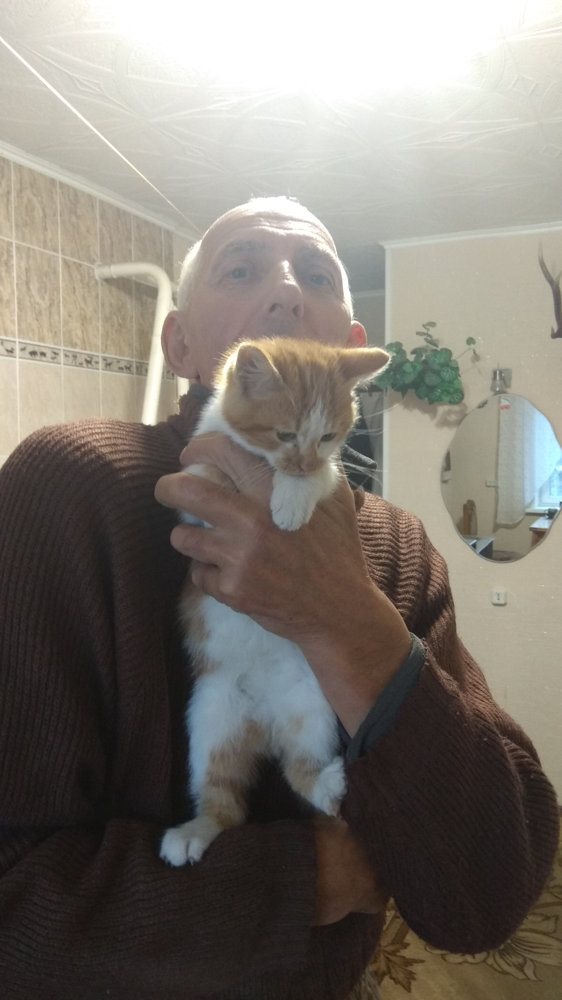

С ДНЁМ РОЖДЕНИЯ, ПАПА!
16 июля 1973 года на свет появилось это чудо:
Мой папа пошёл в Детский Сад №4 и выпустился оттуда в 1980г.:
Это его мама, Штука Людмила Игнатьевна:
А это его папа, Штука Владимир Фёдорович:

Учебная история
Мой папа обучался в МБОУ СОШ №11 города Спасска-Дальнего с первого по десятый класс. Учился хорошо.
На этом я завершаю рассказ и ещё раз поздравляю с днём рождения!
Внимание! Сайт не заполнен до конца! Если у вас есть информация, которой его можно дополнить - сообщить главному верстальщику!